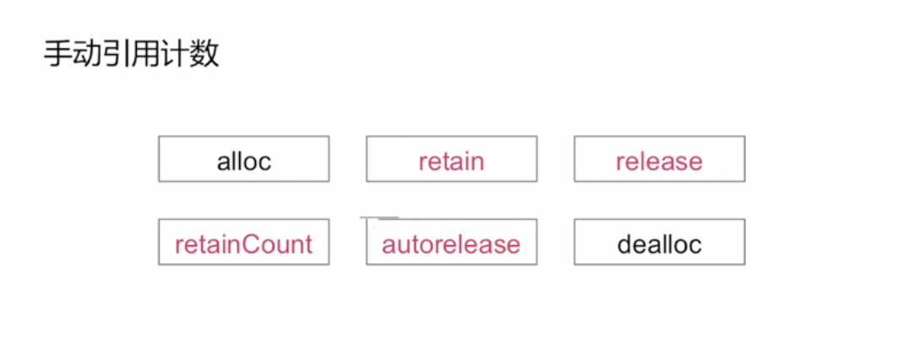
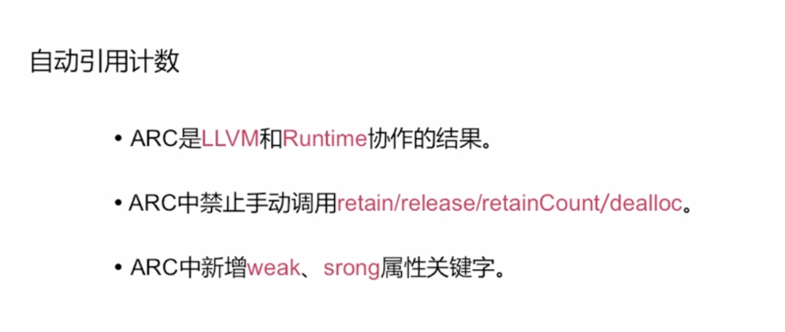
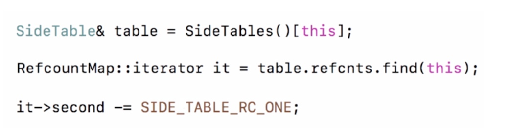
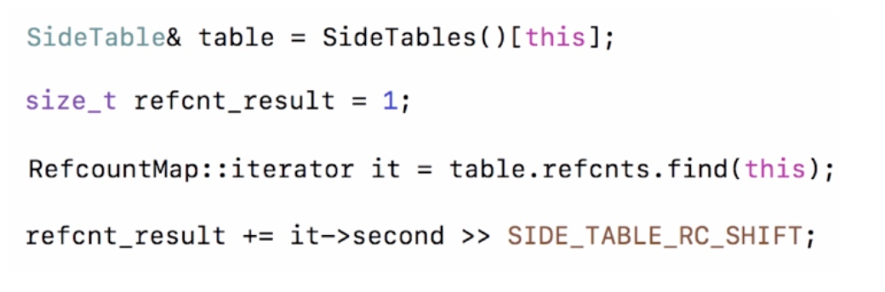
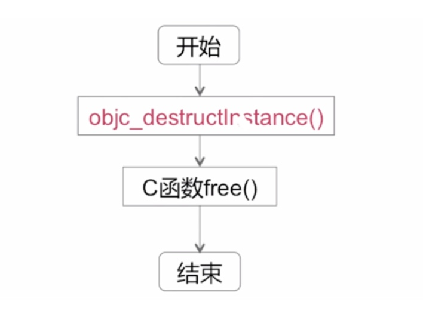
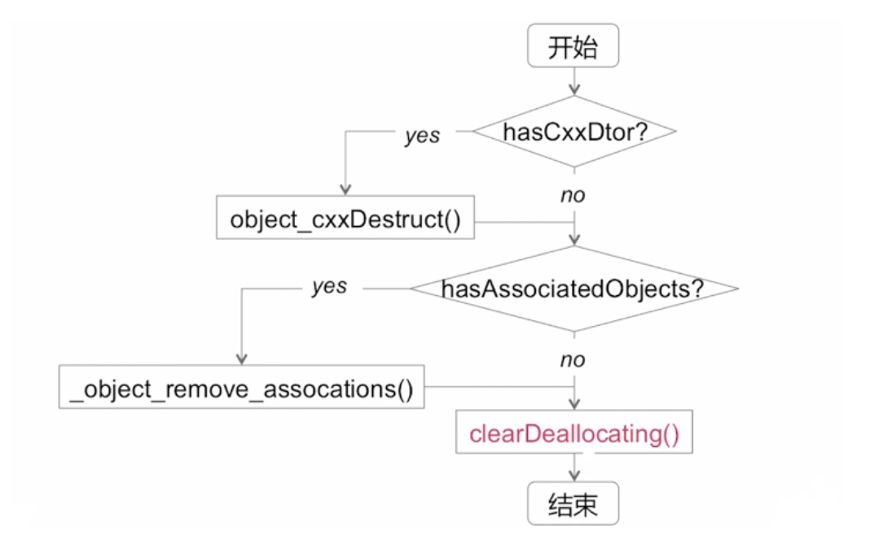

MRC

MRC：是通过手动引用计数来进行对象的内存管理，关于内存管理涉及到这么几个方法
- alloc：用来分配一个对象的内存空间
- retain：可以使一个对象的引用计数加一
- release：对一个对象的引用计数进行减一操作
- retainCount：这个函数可以获取当前对象的引用计数值
- autorelease：如果调用了一个对象的 autorelease 方法，那么当前这个对象会在 autorelease pool 结束的时候调用它的 release 操作进行计数减一
- dealloc：在 MRC 中调用 dealloc 的话，需要显示的调用 super dealloc 来释放或者说废弃父类的相关成员变量
- 在 MRC 当中所使用的特有方法，就是标红的这四个方法，在 ARC 当中如果调用这个四个方法，会引起编译报错
ARC

ARC：是自动引用计数管理内存
实际上是由编译器自动为我们插入 retain release 之外，还需要 Runtime 的功能支持，然后由编译器和 Runtime 共同协作才能组成 ARC 的全部功能
ARC 中禁止手动调用 MRC 当中独有的方法，比如 retain release retainCount dealloc，在 ARC 当中可以重写某个对象的 dealloc 方法，但是不能在 dealloc 方法当中显式调用 super dealloc 方法
除此之外 ARC 当中增加了 weak 和 strong 属性关键字
1.alloc 实现
进过一系列调用，最终调用了 C 函数 calloc
此时并没有设置引用计数为 1
alloc 比较简单，只是经过一系列的函数封装和调用最终调用了一个C 函数 calloc
alloc 分配之后的对象它并没有设置引用计数为 1，但是通过 retainCount 获取它的引用计数时为 1，原因请往下看:
2.retain 实现

- 这段代码表示通过当前对象的指针到 SideTables 当中去获取它所指的 SideTable ，当获取到这个对象引用计数相关的 SideTable 之后，再在这个 SideTable 的结构当中去获取引用计数 refcnts 成员变量（引用计数表），通过当前对象的指针在这个 SideTables 当中的引用计数表当中去获取当前对象的引用计数值
- 在进行 retain 操作的时候是进行了两次哈希查找，最终查找到的结构是 size_t 类型的（无符号 long 型）值，然后再对引用计数值加一操作
- 这里面所加的是一个 SIDE_TAVLE_RC_ONE 的宏定义，加的值不是实际的 1，因为我们在讲述 size_t 这个存储引用计数变量的时候，说明了它64个bit位前两个位置不是存储引用计数的，而是在后面的62位中存储的引用计数，这里的所谓加一操作实际上加上了对应的偏移量，这个偏移量实际上应该是 4，给我们反应出来的结果就是加一操作
3.release 实现

- 第一行代码和上面分析的一样，通过当前对象的指针经过哈希算法在 SideTables 当中去获取它所指的 SideTable
- 然后再根据当前对象指针访问 table 当中的引用计数表去查找它对应的引用计数表
查找到之后，把对应的值进行减一操作
4.retainCount 实现

第一句代码同上
声明了一个局部变量，指定它的值是 1，然后通过当前对象到引用计数表当中去查找，把查找的结果做一个向右便宜的操作，然后再结合这个局部变量的 1 进行一个加的操作，再返回给调用方
所以说，如果我们刚新 alloc 出来的对象，在引用计数表当中是没有这个对象相关联的一个 Key Value 的映射的，这个值读出来就是 0，然后由于局部变量是 1，所以此时只经过 alloc 调用产生的对象去调用它的 retainCount 就可以获取到它的值为 1
5.dealloc 实现（重要）

- 首先会调用 _ objc _rootDealloc() 私有函数
- 这个函数又会调用 rootDealloc() 函数，然后会在这个函数内部判断当前对象是否可以直接释放
- 如果这些条件都不满足就直接调用 C 函数的 free() 进行对象的内存释放
- 否则就要再调用一个函数做后续的清理
直接释放的判断条件
- nonpointer_isa：判断当前对象是否使用了非指针型的 isa
- weakly_referenced：当前对象是否有 weak 指针指向它
- has_assoc：当前对象是否有关联对象
- has_cxx_dtor：当期对象的内部实现是否有涉及到一些C++相关的内容，以及当前对象是否使用 ARC 管理内存，如果有涉及C++或者使用ARC管理内存返回YES
- has_sidetable_rc：当前对象的引用计数是否是在通过 sidetable 当中的引用计数表来维护的，因为在前面讲述关于 nonpointer_isa 的时候提到过如果说采用这中非指针型的 isa 指针的话，它当中存储了一部分引用计数的值，当超出上限的时候，再使用 sidetable 这种方式去存储
只有当当前对象既不是非指针型的 isa ，同时没有弱引用，并且也没有关联对象，并且也没有涉及到 C++ 相关内容，并且没有涉及到 ARC，并且当前对象没有采用 sidetable 来存储引用计数，只有在这种条件下，才可以调用 C 函数直接释放，否则的话就要调用 object_dispose() 对象清除函数
思考：为什么要进行这么多的判断才能进行后续的 object_dispose() 方法调用？
- 如果对象有弱引用的话，那么在这个对象释放废弃的时候需要对它的引用对象进行处理
- 如果有关联对象需要对关联对象进行处理
- 包括C++、引用计数相关的处理
object_dispose() 实现

- 首先这个函数内部会调用一个 objc_destructInstance() 函数，看这名字就可以得出是销毁实例的含义
- 然后这个方法调用之后再调用 C 函数的 free()
- 然后结束 dealloc 实现
objc_destructInstance() 实现

- 在这个函数当中首先会判断当前还有是否有 C++ 相关的内容或者当前对象是否采用的是 ARC
- 如果有的话会调用 objec_cxxDestruct() 这个方法，如果没有的话会判断当前对象是否有关联对象
- 如果当前对象有关联对象的话在 dealloc 内部实现会调用 _object_remove_assocations() ,通过名称可以看出是做了对象的相关关联对象的移除
- 关联对象的判断过了之后会调用一个叫 clearDeallocating() 函数，然后结束 dealloc 流程
思考：我通过关联对象的技术为一个类添加了一些实例变量，那么在对象的 dealloc 方法方法当中是否有必要对它的关联对象进行移除操作？
不需要
在系统的 dealloc 内部实现当中，会自动判断当前对象是否有关联对象，如果有的话系统内部就帮助我们把相关的关联对象移除掉
clearDeallocating() 实现

- 首先需要调用 sidetable_clearDeallocating() 函数
- 之后会调用 weak_clear_no_lock() 函数，这个函数做的就是将指向该对象的弱引用指针置为 nil
- 之后会调用 table.refcnts.erase() ,table 的引用计数的擦除操作，实际上就是将当前对象在引用计数表当中的一些存储数据给清除掉
- 然后结束调用流程